Results at a glance
Summary
| Test | What was verified | Evidence | Status |
|---|---|---|---|
| 1 · AI inventory & price | Assistant reports Basic Hoodie Big Yale stock (total and by size) and price from the database | 2 screenshots + field-by-field comparison | ✓ Pass |
| 2 · Dynamic search cards | "What hoodies do you have available?" fills the Products page with 27 clickable cards; card opens its detail page | 2 screenshots + counts vs database | ✓ Pass |
| 3 · Problem 9 usability | Category filter + price sort with result count and no-match feedback; also mobile layout and suggested chat questions | 6 screenshots | ✓ Pass |
| Automated checks | Backend unit tests; TypeScript type-check and production build; lint | Command output (below) | ✓ Pass |
Step 1
Launch and inspection
All services were running from the project's own configuration before testing began.
| Component | Details | Check |
|---|---|---|
| Front end | React + Vite + TypeScript, npm run dev → http://localhost:5180 | ✓ Loaded |
| Backend | FastAPI, run from backend/ with uvicorn main:app --reload --port 8000; Vite proxies /api and /images | ✓ /api/health → {"ok":true,"model":"gpt-6-luna"} |
| Database | SQLite data/campus_customs.db: 102 products, 612 inventory rows | ✓ /api/products returned 102 |
| AI agent | PydanticAI agent, model gpt-6-luna via Portkey; read-only tools search_products, get_product_details, check_stock, similar_products query the same database | ✓ Answers matched DB (Tests 1–2) |
| Browser testing | Browser automation of the live site (clicks, typing, screenshots) at desktop 1280×900 and phone 375×812; tests run as a guest (logged out) | ✓ Available |
Step 2 · Test 1
AI chat inventory and price accuracy
Goal: the assistant retrieves real inventory and price from the database and doesn't invent anything.
Procedure
- Chose a real product with varied stock: Basic Hoodie Big Yale (
basic-hoodie-big-yale) and read its record from the database first. - Opened its product page on the live site, opened Handsome Dan, and typed the question below.
- Compared every number in the reply against the database.
AI answer vs database
| Field | AI assistant said | Database record | Result |
|---|---|---|---|
| Product identified | Basic Hoodie Big Yale ("this hoodie" = the open page) | basic-hoodie-big-yale, Basic Hoodie Big Yale | ✓ Match |
| Price | $68 | 68.0 | ✓ Match |
| Total in stock | 60 | SUM(quantity) = 60 | ✓ Match |
| XS / S / M | 15 / 5 / 5 | 15 / 5 / 5 | ✓ Match |
| L / XL / XXL | 8 / 2 / 25 | 8 / 2 / 25 | ✓ Match |
No extra products, discounts, or quantities appeared in the reply. (The agent also has an automatic fact-check that rejects any price no tool returned; see Problem 9.)
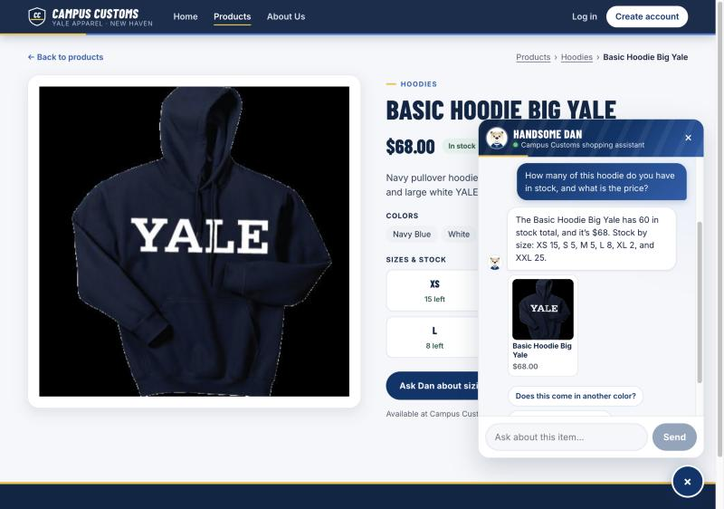
app_check_images/test1_chat_stock_and_price.jpg
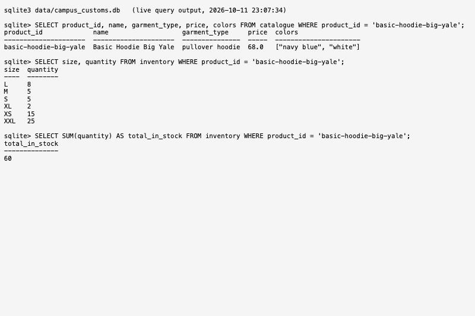
sqlite3 output for basic-hoodie-big-yale: price 68.0, sizes XS 15, S 5, M 5, L 8, XL 2, XXL 25, total 60. It proves every number in the AI's answer came from the database rather than being invented.
app_check_images/test1_database_record.jpg
Step 3 · Test 2
Dynamic search results and product cards
Goal: a category question in chat fills the storefront with matching, clickable product cards, with no page refresh.
Procedure
- Opened the Home page and set a marker variable in the page's memory (
window.__noReloadMarker). - Opened Handsome Dan and asked: "What hoodies do you have available?"
- Checked the page that appeared, then clicked the Yale Sports Hoodie Tennis card on it.
| Check | Observed on the live site | Result |
|---|---|---|
| Catalogue searched | Page heading "Hoodies · 27 items for 'What hoodies do you have available?'"; database has 27 products whose type contains "hood" | ✓ |
| No page refresh | Moved from / to /products and the marker set before sending was still present afterward (a reload would have erased it) | ✓ |
| Cards complete | All 27 cards have an image, name, price, and short description; all labeled Hoodies | ✓ |
| Card clickable | Clicked card href="/products/yale-sports-hoodie-tennis" → opened /products/yale-sports-hoodie-tennis | ✓ |
| Detail page correct | Large image, "Yale Sports Hoodie Tennis", $45.00, full description, colors, sizes XS 8 · S 8 · M 25 · L 12 · XL 12 · XXL 2 (total 67); database: $45.0, total 67 | ✓ |
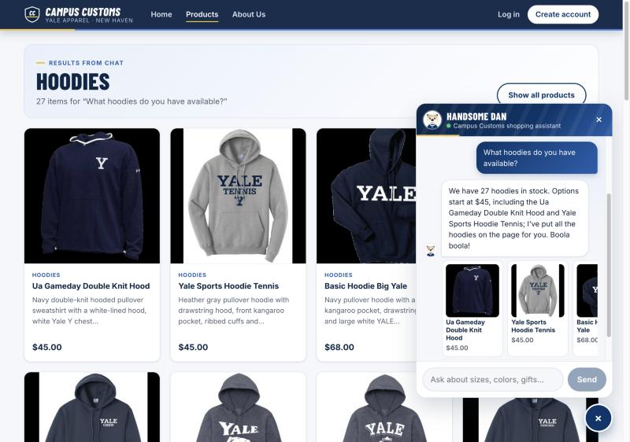
app_check_images/test2_chat_hoodie_results.jpg
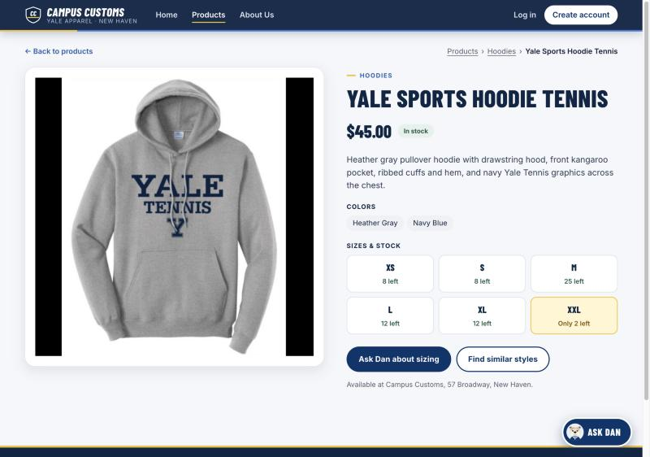
app_check_images/test2_product_detail_page.jpg
Step 4 · Test 3
Problem 9 usability improvement
Feature tested: product category filtering and sorting (Problem 9, Front-end Improvement 1), including the feedback the shopper sees. Two more Problem 9 features are shown as supporting evidence: the phone layout and suggested chat questions.
Procedure
- Before: opened Products: "Showing 102 of 102", "All" selected, sort "Featured", mixed categories and prices.
- Clicked the Hoodies category chip, then chose Sort by: Price: low to high.
- Read every card on the page to confirm the category and order, then scrolled to the end of the list.
- Typed "sneakers" in the search box to check the no-match feedback.
| Check | Observed | Result |
|---|---|---|
| Products change with the category | "Showing 27 of 102 products"; all 27 cards labeled Hoodies; Hoodies chip highlighted with its count | ✓ |
| Correct sort order | Prices in order: $45, $45, then 23 × $68, then $88, $88 (checked all 27) | ✓ |
| Filters kept in the URL | /products?cat=Hoodies&sort=price_low (shareable; Back returns here) | ✓ |
| Useful feedback | Result count; for "sneakers": "No products match 'sneakers'", tip, Search all categories and Clear filters buttons | ✓ |
| Phone layout (supporting) | 375px: 2-column grid, filters and sort usable, no horizontal scrolling | ✓ |
| Suggested chat questions (supporting) | Full-screen phone chat shows "Show me hoodies", "What products are available?", "Help me find a gift", "Anything under $40?" | ✓ |
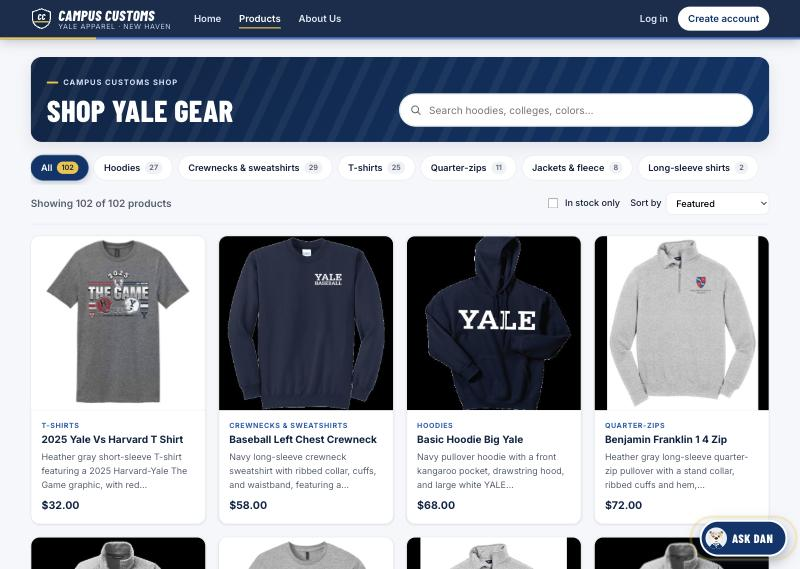
app_check_images/test3_before_all_products.jpg
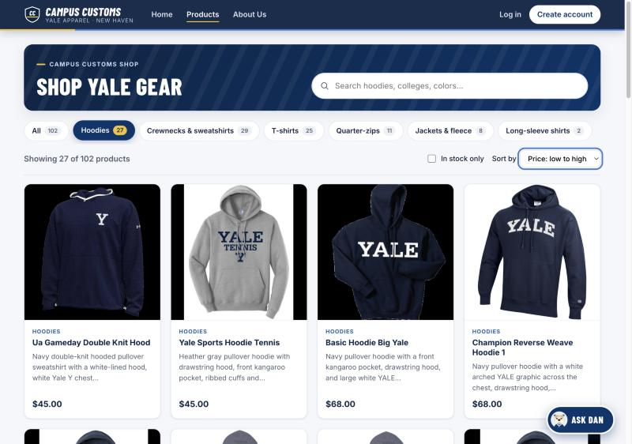
app_check_images/test3_after_hoodies_price_low_to_high.jpg
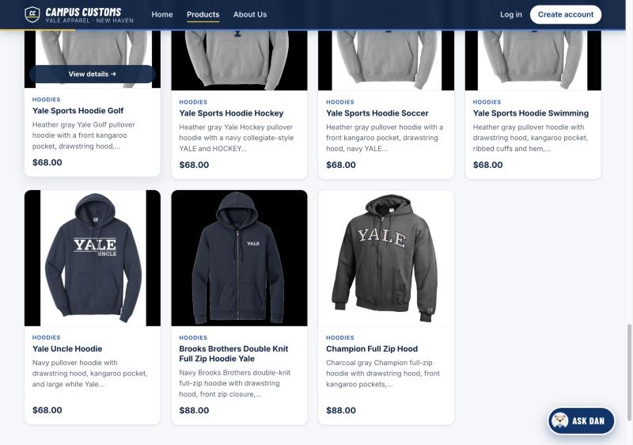
app_check_images/test3_after_end_of_list.jpg
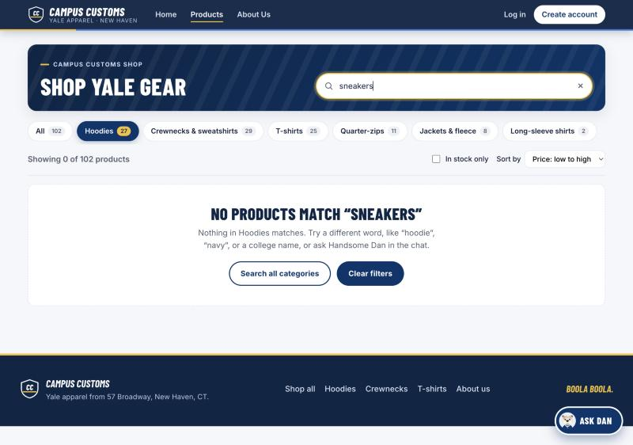
app_check_images/test3_no_match_feedback.jpg
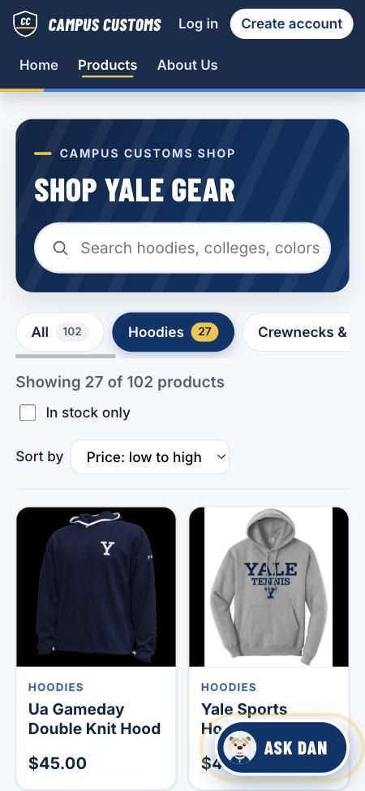
app_check_images/test3_mobile_products.jpg
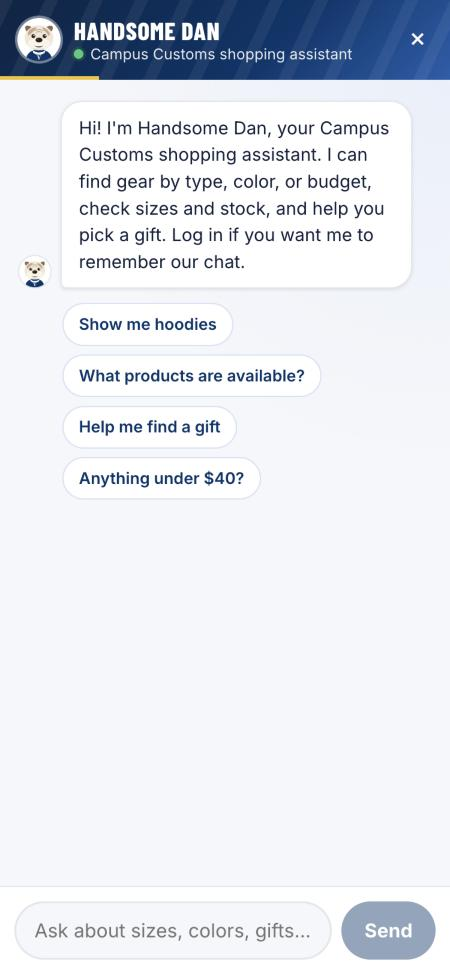
app_check_images/test3_mobile_chat_suggestions.jpg
Defects
Found and corrected during testing
| # | Defect | Fix | Re-test |
|---|---|---|---|
| 1 | On phones while logged out, the "CAMPUS CUSTOMS" wordmark wrapped onto two lines, squeezed by the Log in / Create account buttons (cosmetic) | frontend/src/index.css: wordmark set to one line, slightly smaller logo, wordmark, and Create account button on phones | ✓ Wordmark on one line (18px tall); no nav links off-screen; no horizontal scrolling |
No functional defects were found in the three required tests: every answer and count matched the database, and every card and link worked.
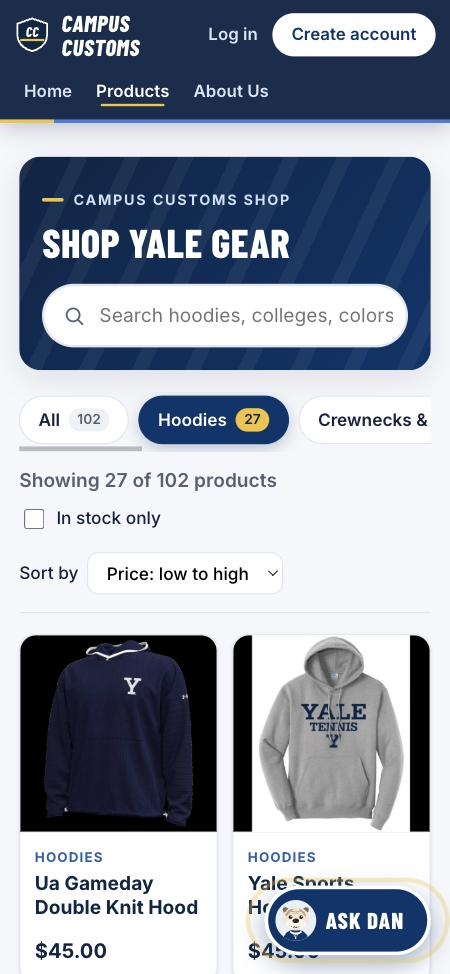
app_check_images/defect_mobile_wordmark_before_fix.jpg
app_check_images/test3_mobile_products.jpg
How this report was produced
Method and authenticity
- Every screenshot was captured by browser automation from the running application during this test run; none are mock-ups. They are browser-viewport captures, downscaled by the capture tool; click any image to enlarge it. Each image loads from
app_check_images/next to this file, so keep the folder with the report. - The database screenshot shows raw output of
sqlite3 data/campus_customs.dbqueries run at test time, displayed in the browser so it could be captured. The temporary file was deleted afterward. - Database values in the tables above were read directly with SQL, not copied from the website.
- Tests ran as a guest so no customer's saved chat appears in the screenshots.
Automated checks run with this report
| Command | Result |
|---|---|
cd backend && .venv/bin/python -m unittest discover tests | 31 tests passed |
cd frontend && npm run build (TypeScript check + production build) | Built successfully |
cd frontend && npx oxlint src | 0 errors |
Reproduce
cd backend && source .venv/bin/activate && uvicorn main:app --reload --port 8000cd frontend && npm run dev, then openhttp://localhost:5180- Follow each test's procedure above.